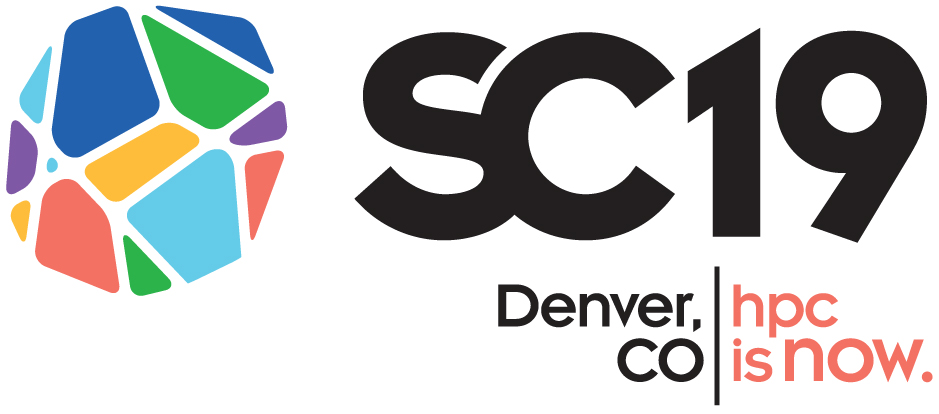

| |

|
HPC Students - Student Cluster Competition (SCC)
Training Schedule (Tentative)
|

|
|
| |
To help prepare our team for the competition, we have planned a series of training sessions, to be held on Fridays from 1:00pm to 3:00pm in the SDSC SynCenter (or the Auditorium, if needed). Note: this schedule is still in flux as we await input from the official SCC program. The scope of the training effort includes several skill development activities, including:
- Study HPC architectures, software, and admin skills.
- Learn the basics of parallel programming, including MPI using C, Fortran, and possibly other languages.
- Running HPC applications in the areas of performance characterization of the cluster, bioinformatics, numerical methods, password security, and other applications.
- Visualization and analysis of big data sets.
- Work as a team to develop and work on the items above.
Students who successfully complete the HPC Training program will receive an SDSC Certificate of Completion in HPC Training, and will become eligible to apply to be on the SCC Core team. Note: the final SCC team who will travel to the competition will be chosen from this group.
|
| |
An Orientation Session will be held on April 12th at 1pm in the SDSC Auditorium.
RSVP here to attend.
|
| |
SCC Training Plan (Tentative):
| WEEK |
DATE |
TOPIC |
DETAILS |
| 1 |
4/12/19 |
SCC Program Orientation |
SCC History & SDSC Plan ; Registration process & accounts |
| |
|
Basic Unix Skills |
Linux intro; basic unix tools ssh, scp |
| 2 |
4/19/19 |
Intro to Running Jobs on Comet |
- Comet Architecture
- Hands-on examples
- System software Running jobs
- Queues & batch; files IO
|
| 3 |
4/26/19 |
Threads |
Pthreads, OpenMPI |
| 4 |
5/3/19 |
MPI, part 1 |
Intro to MPI; Comms/network; prof w/timers |
| 5 |
5/10/19 |
MPI, part 2 |
File IO; other topics tbd |
| 6 |
5/17/19 |
Performance, Optimization, and Profiling |
Common profiling and monitoring software and tools Gprof ARM MAP |
| 7 |
5/24/19 |
GPU/CUDA |
Architecture: CUDA; IO; prof w/timers |
| 8 |
5/31/19 |
Data Analytics |
Tensor flow; torch; horovod (mach learning) |
| 9 |
6/7/19 |
Optional Topics |
SCC Core group Selection completed before finals |
|
| &sbsp |
The SCC'19 effort is sponsored by the SDSC HPC Students program, the newly formed UCSD Supercomputing Club, and our sponsors. To learn more, see:
For questions, contact Mary Thomas: mthomas at sdsc.edu
|